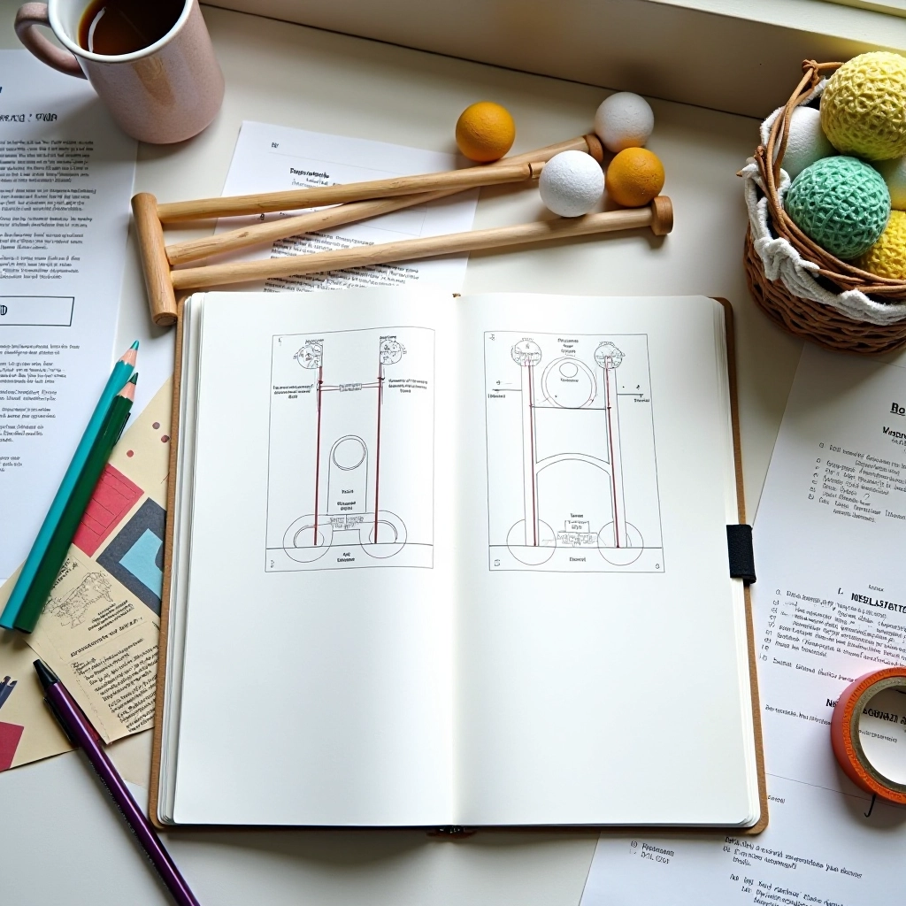

فريق استراتيجية الكروكيه التحريري
فريق التحرير والمراجعة
نحن نعمل على تجميع وتنظيم المعلومات العملية حول استراتيجيات الكروكيه، مع التركيز على تقنيات ضربة الاقتراب من الطوق. كل محتوى يمر عبر عملية بحث دقيقة والتحقق من الصحة قبل النشر.

منصة موثوقة للمعلومات العملية
نعمل ضمن استراتيجية الحلقة للكروكيه ذ.م.م، وهدفنا توفير معلومات دقيقة وسهلة الفهم عن استراتيجيات الكروكيه. لا نقدم وعوداً مبالغ فيها — فقط معلومات عملية يمكن للاعبين استخدامها مباشرة في اللعب.
كل مقال يبدأ بسؤال حقيقي من مجتمع اللاعبين. نقوم بالبحث الشامل، نختبر المعلومات، ثم نكتب بطريقة واضحة بعيداً عن التعقيد غير الضروري. المحتوى لدينا يتم مراجعته بشكل منتظم للتأكد من أنه يبقى حديثاً وذا قيمة حقيقية.
عملية التحرير والمراجعة
نتبع خطوات واضحة لضمان أن كل محتوى يحقق معايير الدقة والوضوح
البحث العملي
نختار المواضيع بناءً على احتياجات اللاعبين الفعلية والأسئلة الشائعة. بعد ذلك نقوم بالبحث الشامل عن كل موضوع، مع التركيز على الجوانب العملية التي يمكن تطبيقها مباشرة.
التحقق من الدقة
نتحقق من جميع التفاصيل والنصائح للتأكد من مطابقتها لأفضل الممارسات المعروفة. نختبر المعلومات بعناية قبل نشرها. هذه الخطوة ضرورية لأننا لا نريد أن ننشر معلومات غير دقيقة.
التحديث المستمر
المحتوى يتطور مع تطور الرياضة. نقوم بمراجعة وتحديث الأدلة بشكل منتظم لتعكس أحدث الفهم والممارسات. الأسلوب الواضح والبسيط يبقى أولويتنا الأساسية.
مجالات التركيز الرئيسية
استراتيجية ضربة الاقتراب من الطوق
التركيز الأساسي لموقعنا. نغطي تقنيات الضربة، قراءة الملعب، اختيار الزوايا، والتدريب المتقدم. المحتوى يناسب اللاعبين من جميع المستويات — من المبتدئين الذين يتعلمون الأساسيات إلى اللاعبين المتقدمين الذين يسعون لتحسين أدائهم.
الممارسة والتطوير
نقدم برامج تدريب عملية وخطوات واضحة لتحسين المهارات. المحتوى لدينا يركز على التطبيق الفعلي — كيفية البدء، كيفية التدرج، وكيفية معالجة التحديات الشائعة. نحن نؤمن بأهمية الممارسة المنظمة والمراجعة المستمرة.
التحليل والتوثيق
البحث العملي
نجمع المعلومات من مصادر موثوقة ومن التجارب العملية. نختبر الاستراتيجيات والتقنيات بعناية. النتيجة هي محتوى يعتمد على الممارسة الفعلية، لا على التنظير فقط.
التوثيق الدقيق
كل خطوة موثقة بوضوح. نستخدم لغة بسيطة وتعليمات خطوة بخطوة. الصور والأمثلة تساعد على فهم أفضل. نتجنب الإفراط في التعقيد والمصطلحات الغريبة.
المراجعة المستمرة
نراجع المحتوى بشكل منتظم للتأكد من أنه يبقى حديثاً وذا صلة. عندما نكتشف معلومات جديدة أو أفضل ممارسات، نحدث الأدلة. الشفافية حول كيفية إنشاء المحتوى لدينا هي أولويتنا.
لماذا يمكنك الوثوق بنا
المعلومات الدقيقة
كل محتوى يتم التحقق منه بعناية. نتجنب المعلومات غير المؤكدة والادعاءات المبالغ فيها.
التطبيق العملي
النصائح والاستراتيجيات يمكن تطبيقها مباشرة. لا نكتب عن نظريات بلا فائدة.
التحديث المنتظم
المحتوى يتطور مع تطور الرياضة والممارسات. نحدث الأدلة بانتظام.
الوضوح والبساطة
نكتب بطريقة واضحة وسهلة الفهم. الشروحات معقدة لا تساعد أحداً.
استكشف المحتوى الخاص بنا
اطلع على الأدلة العملية والاستراتيجيات المفصلة حول ضربة الاقتراب من الطوق في الكروكيه.